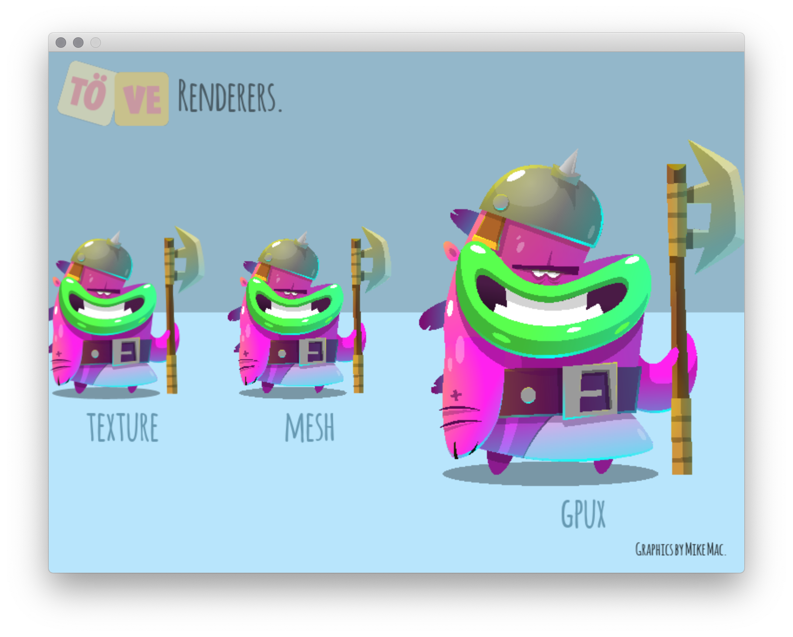
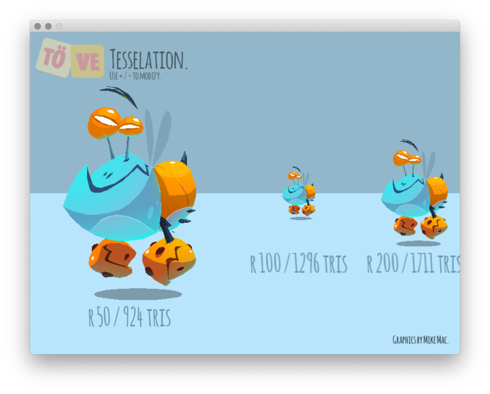
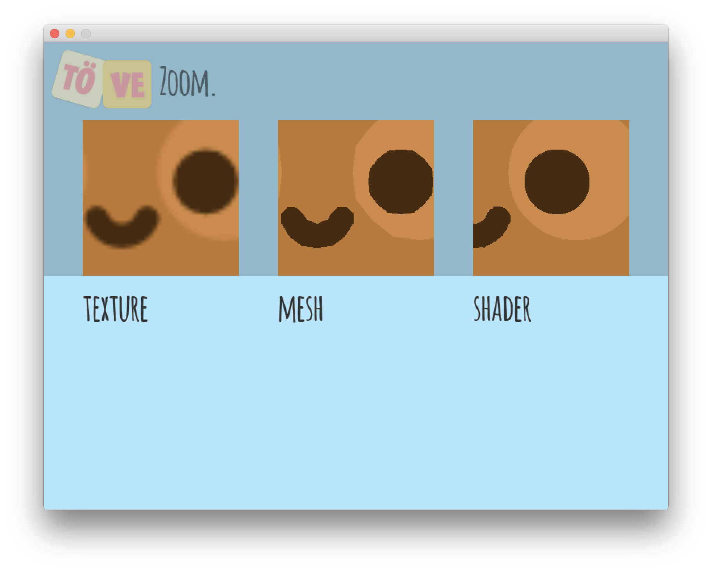
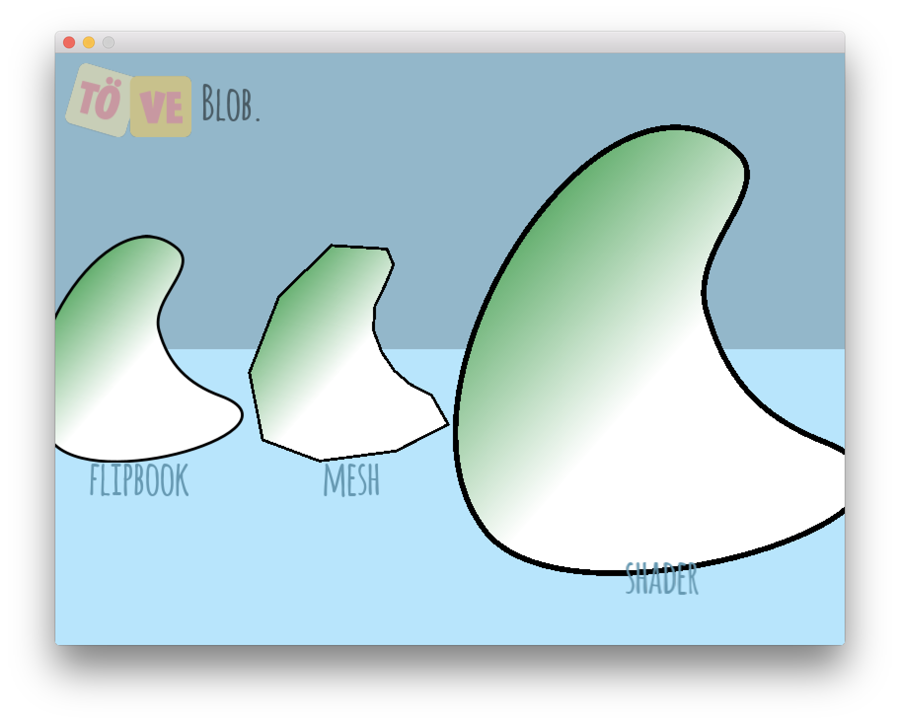
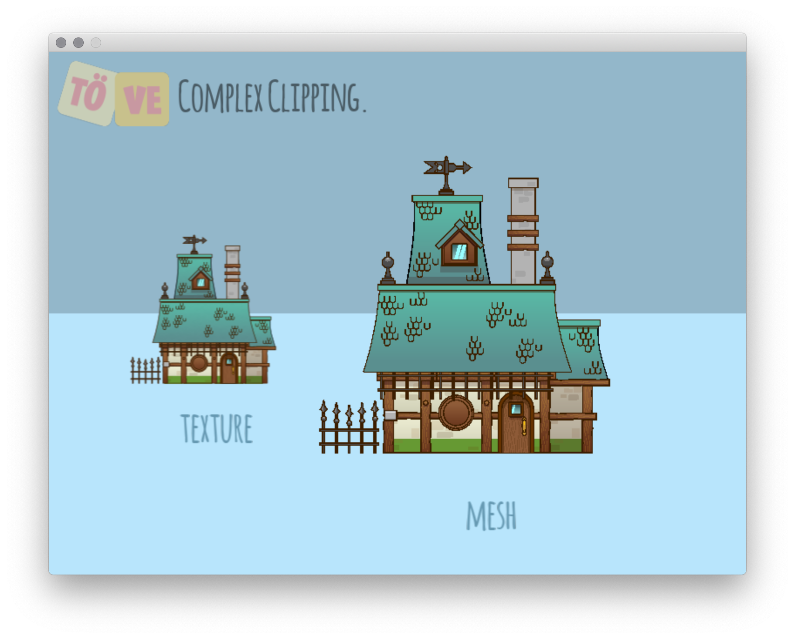

The Demos
You might wonder at this point, what you gain with TÖVE over simply rasterizing your vector graphics to textures via an export step from your vector drawing software. It's flexibility.
Let's take a quick look at some of TÖVE's demos, as they explain a lot about the core ideas and capabilities of TÖVE.
Running the Demos
Check out the whole repo from GitHub. To run the demos, the lib and assets folders need to be accessible from inside the demos.
On macOS and Linux, the demos contain symbolic links, and all you need to do is to unzip TÖVE's lib into the repo's root like this:
- demos
- docs
- lib
- libTove.dylib
- ...
- LICENSE
- ...
Then you can start one demo, e.g. the zoom demo, using:
cd demos/zoom
love .
On Windows, the symbolic links don't work :-( So you need to unzip the lib into each demo folder. Also you need to copy the demos/assets folder inside the respective demo folder. Basically: replace the symlinks with the real stuff.
Warp Demo
A demo allowing you to change shape and character of curves on any SVG using a brush-like interface. Best of all, you can define various frames in this way and then animate between them using a mesh rendering:

Renderers Demo
Interactively zoom TÖVE's three renderers to inspect the quality of each variant. Note that startup takes time due to the compilation of the gpux shaders:

Tesselation Demo
The mesh renderer's quality setting produces meshes of different detail and triangle count from the same SVG:

Zoom Demo
Scaling bitmaps produces blurriness or pixelation, scaling meshes produces straight crisp lines, while TÖVE's unique shader-based gpux renderer will render crisp curves at many reasonable scales:

Blob Demo
Animate between two SVGs using different renderers and qualities:

The SVGs have been exported as animation from one single timeline from Smith Micro Moho. As Moho uses one underlying geometry for all exported frame (defined on frame 1 in the timeline), all SVGs share the same path and point layout, which allows for interpolation in TÖVE.
Hearts Demo
Procedurally animate geometry and colors (here: a linear gradient) through different renderers:

The numbers displayed are times spent inside love.graphics.draw (might not be representative as more work might happen later in the swap of the GL context).
The mesh and gpux renderers update existing GPU data structures like meshes and shader textures without recreating them, which allows for higher frame rates.
This demo illustrates two internal variants of the mesh renderer: one uses flat meshes (if no gradients are
exist), the other uses shaders for gradient renderers. mesh automatically chooses the right internal variant.
Fill Rule Demo
TÖVE offers support for holes and fill rules for all of its renderers:

Clip Path Demo
For non-animated rendering, TÖVE is able to render rather complex clip paths in texture and mesh modes. In this SVG by Chris Hildenbrand, there are about 200 wildly nested clip paths:

Retro Rasterization Demo
For non-animated rasterization, TÖVE supports various dithering modes for rendering gradients with limited palettes:

MiniEdit Demo
TÖVE comes with a mini editor that lets you explore all of TÖVE's features (different renderers and settings) interactively. You can drag and drop any SVG into the editor. It also has a demo mode that lets you benchmark performance: